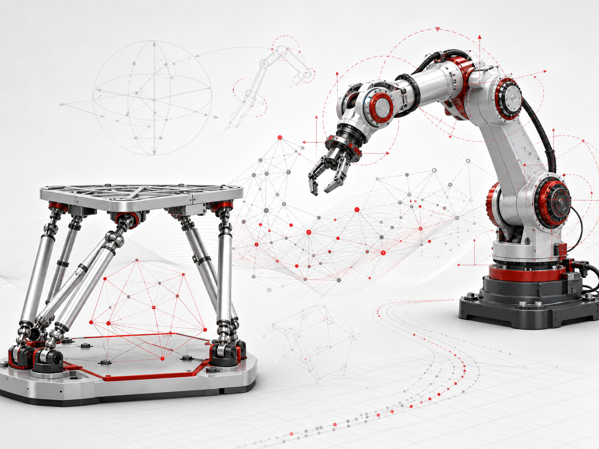
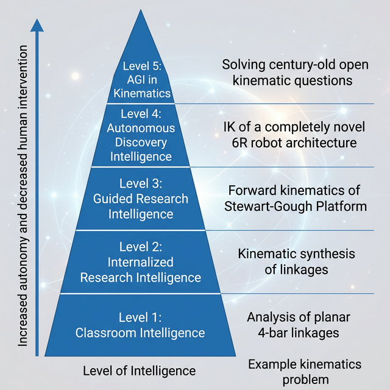
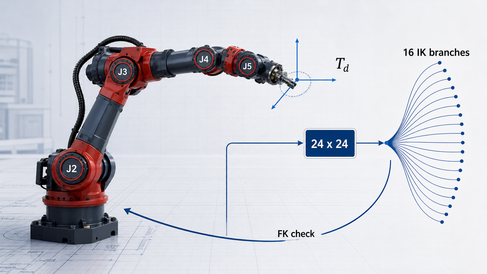
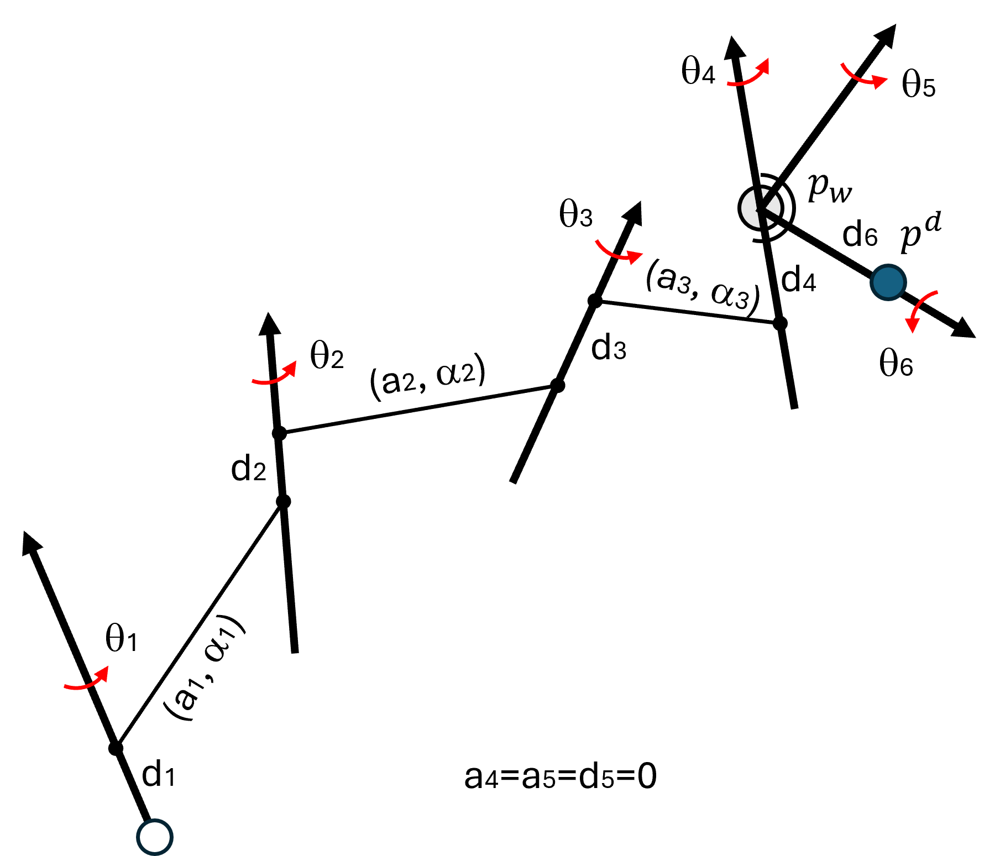
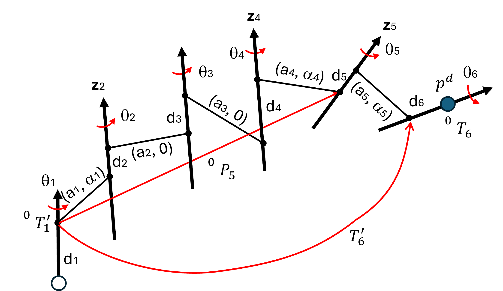

The Use of AI in Kinematics: MSR 2026 Tutorial
4th International Symposium on Mechanical Systems and Robotics (MSR 2026), Irvine, CA — May 21–23, 2026

Overview
This MSR 2026 tutorial presents a validation-centered workflow for using large language models and coding agents in kinematics research and education. The core message is practical: AI is most useful when it is treated as a laboratory assistant that receives source material, constraints, tools, and tests. The session connects conversational planning, IDE-based code generation, computer algebra systems, and terminal-driven validation into a repeatable workflow for developing kinematics solvers and teaching applications.
The tutorial is based on two accepted ASME IDETC/CIE 2026 papers with J. Michael McCarthy, plus companion repositories and examples from classical mechanism theory. It covers simple planar linkages, spherical and spatial dyad synthesis, Stewart–Gough platform forward kinematics, general 6R inverse kinematics, and AI-assisted closed-form IK solvers for common industrial robot architectures.
The two foundational paper repositories are IK_6R_RR_1993 for the AGI-in-kinematics benchmark framing and general 6R IK work, and gdl_llm_reproduction for the practical LLM-assisted kinematics examples.
Presentation Video




Tutorial Structure
The 45-minute tutorial and 15-minute Q/A were organized around four modules, moving from motivation and tool setup to concrete kinematics case studies and responsible educational use.
| Module | Focus | Takeaway |
|---|---|---|
| 1. Introduction | Why kinematics is difficult for AI: geometry, branches, singularities, polynomial elimination, and numerical stability. | AI output is useful only when paired with independent checks. |
| 2. Environment and agents | ChatGPT, VS Code, Codex, Claude Code, Python, SciPy, Mathematica, terminal runs, and browser demos. | Use chat for framing and agent mode for files, tests, and iteration. |
| 3. Kinematics examples | Four-bar analysis, RR/PR dyads, spatial SS synthesis, Stewart–Gough FK, general 6R IK, and industrial 6R IK architectures. | The hard part is specifying the stable mathematical route and the evidence that proves it worked. |
| 4. Future and education | Domain skills, validation harnesses, responsible disclosure, and AI-assisted teaching tools. | AI should compress implementation loops without replacing derivation, debugging, and mathematical judgment. |
Hands-on Workflow
The live workflow asks participants to move from an informal question to a structured agent prompt, then to executable code and a validation report. Before asking the agent to build a solver or app, the prompt should define the source material, notation, exact task, branch requirements, deliverables, and pass/fail evidence. In the kinematics examples, that evidence includes loop residuals, known solution counts, planted roots, FK–IK–FK checks, and stress tests around singular or near-degenerate cases.
| Case Study | Agent Contribution | Required Evidence |
|---|---|---|
| Planar four-bar analysis | Translate textbook equations into a branch-aware solver and visualizer. | Loop closure, link-length residuals, and two valid assembly branches where expected. |
| Planar and spherical dyad synthesis | Generate symbolic/numeric workflows for RR, PR, and spherical RR synthesis examples. | Constraint residuals, rank checks, real-solution filtering, and axis-aware validation. |
| Spatial SS synthesis and Stewart–Gough FK | Implement published algebraic pipelines and CAS-driven elimination steps. | Known solution counts, planted roots, polynomial degree checks, and residual reports. |
| General 6R inverse kinematics | Code the Raghavan–Roth style dialytic-elimination route and numerical root solve. | Sixteen IK branches where applicable and FK–IK–FK pose recovery. |
| Industrial 6R spherical-wrist and parallel-joint IK | Generate solver code, prompts, tests, and benchmark reports for common architectures. | Validation on industrial robot catalogs and randomized configurations. |
Resources
- Tutorial slide deck: AI_in_Kinematics_Tutorial_MSR_Irvine_2026.pdf
- Hands-on outline: MSR_2026_Tutorial_Hands_On_Outline.pdf
- Video presentation: https://youtu.be/oIdzRphaMkc
- Paper 1 GitHub repository: haijunsu-osu/IK_6R_RR_1993
- Paper 2 GitHub repository: haijunsu-osu/gdl_llm_reproduction
- Spatial SS dyad synthesis repository: haijunsu-osu/llm_ss_synthesis_liao_2001
- Stewart–Gough FK repository: haijunsu-osu/llm_FK_Stewart_Husty_1996
- AI-assisted analytical IK project page: LLM Assisted IK Solvers for Robot Manipulators
BibTeX
@misc{Su2026-MSR-AI-Kinematics-Tutorial,
title = {The Use of AI in Kinematics: Hands-on Tutorial for Validation-Centered Human-AI Solver Development},
author = {Su, Hai-Jun},
howpublished = {Tutorial presented at the 4th International Symposium on Mechanical Systems and Robotics (MSR 2026)},
address = {Irvine, CA},
month = {May},
year = {2026},
url = {https://su-idr-lab.github.io/projects/msr_2026_ai_kinematics_tutorial/index.html}
}
@inproceedings{SuMcCarthy2026-AGI-Kinematics,
title = {Where we are in the path towards AGI in kinematics?},
author = {Su, Hai-Jun and McCarthy, J. Michael},
booktitle = {Proceedings of the ASME 2026 International Design Engineering Technical Conferences and Computers and Information in Engineering Conference},
address = {Houston, TX},
month = {August},
year = {2026},
note = {Paper No. DETC2026-193961},
url = {https://github.com/haijunsu-osu/IK_6R_RR_1993}
}
@inproceedings{SuMcCarthy2026-LLM-Kinematics,
title = {Solving Kinematics Problems by Leveraging the Power of Large Language Models},
author = {Su, Hai-Jun and McCarthy, J. Michael},
booktitle = {Proceedings of the ASME 2026 International Design Engineering Technical Conferences and Computers and Information in Engineering Conference},
address = {Houston, TX},
month = {August},
year = {2026},
note = {Paper No. DETC2026-193726},
url = {https://github.com/haijunsu-osu/gdl_llm_reproduction}
}